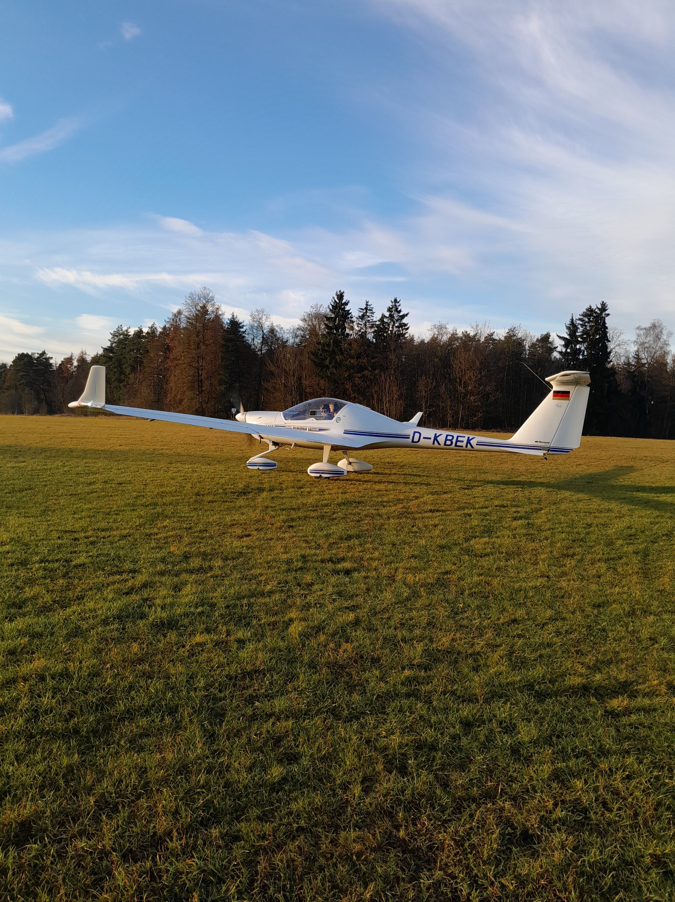

Neuzugang: Unsere Super Dimona „D-KBEK“

Super Dimona löst C-Falken ab
Seit diesem Jahr gehört ein neues Flugzeug zur Flotte unseres Vereins: ein Motorsegler vom Typ Super Dimona. Er ersetzt den altgedienten C-Falken, der uns über viele Jahre hinweg zuverlässig begleitet hat und für zahlreiche Mitglieder das Flugzeug ihrer ersten Flugstunden war. Entsprechend groß ist die Freude über den Neuzugang, und wir hoffen, dass uns die Super Dimona ebenso lange erhalten bleibt und viel Freude bereitet. Gegenüber ihrem Vorgänger ist sie spürbar leistungsfähiger: Mit abgestelltem Motor gleitet sie ungefähr so weit wie unsere klassischen Holzsegelflugzeuge. Anders als beim reinen Segelflugzeug hat man dabei jedoch stets eine Rückversicherung an Bord. Lässt die Thermik nach, kann der Motor wieder gestartet werden, und ein geeigneter Landeplatz ist sicher erreichbar. Gerade für Piloten, die erste Erfahrungen im Streckenflug sammeln möchten, ist das ein großer Vorteil. Darüber hinaus kommt die Super Dimona auch in der Segelflugausbildung zum Einsatz, wo sie unseren Flugschülern zusätzliche Trainingsmöglichkeiten bietet. Mit ihr verfügt der Verein über ein vielseitiges Flugzeug, das Ausbildung, Streckenflug und entspanntes Motorseglerfliegen miteinander verbindet. Wir freuen uns auf viele schöne Flugstunden und laden alle Mitglieder und Interessierten herzlich ein, sich das neue Flugzeug bei Gelegenheit am Flugplatz anzusehen.